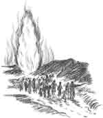
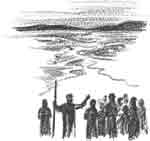

Rosie’s Night-Light

Rosie sat on her bed in her nightgown. Her feet were cold, but she just put her chin on her knees and stared at the night-light in the corner. Emma was sleeping. It had been a busy afternoon and Rosie was tired, too. But she had to think.
Big sister Irene opened the door quietly and came in. She snapped on the table lamp and picked up her Bible. “Oh!” she said in surprise. “Why aren’t you asleep yet?”
“I’m thinking,” said Rosie.
“About what?” whispered Irene, tip-toeing over to sit on the edge of the bed.
“Elise says that no one can be good,” Rosie said slowly. “Is that true, Irene?”
“God can help us be good,” said Irene. “Besides, the verse Dad read tonight says, ‘the steps of a good man are ordered by the LORD,’ (Psalm 37:23) so that means we can be good.”
“But Elise says we can’t say that we do right, because everyone does wrong, and we must say we’re sorry every day for our sins.”
“Elise Thompson said that?” Irene was quiet, and then she said slowly, “I think it is because they don’t believe God can take sins out of our hearts. So they think that they can’t help doing wrong and then they must ask God to forgive them every day.”
“Yes, that is what Elise said,” Rosie whispered, nodding her head. “She said I was bad and should pray for God to forgive me when we were playing house. But I said that I wanted to be a good girl. Then she said I can’t be a good girl, because no one can be good. Irene, do you think I’m a bad girl?”
“When Jesus changed your heart, you didn’t want to do wrong things anymore, and Jesus helped you, didn’t He?” asked Irene.
Rosie nodded her head.
“So, have you done something that you know is wrong?”
“No,” Rosie said slowly, “except yesterday Daniel and I left the rakes out in the rain, and so Dad said we couldn’t use them again. I told him I was sorry that I forgot. Was that doing a sin?”
“It don’t think so, because sinning is to do the thing you know is wrong. It would be better to remember next time though,” Irene said, putting her arm around Rosie’s shoulders. “Let’s pray that God will help us do the right things. Then we can be a light to others who do wrong, okay?”
Rosie nodded. She was glad to have such a kind big sister.
“Is wrong like the darkness?” she asked, as she sleepily crawled under the covers a few minutes later. Irene had switched off the lamp. Now there was only the night-light glowing in the corner.
“Yes, but God is like the sun. He makes the darkness go away. He can help us shine in the dark, too,” Irene said. The ladder creaked as she crawled into her bunk.
Rosie looked at the night-light one more time before she closed her eyes. It shone in the corner like a little star. I can be like a little night-light, Rosie thought. Jesus can help me do right even if Elise thinks I’m bad. Maybe she never had a night-light before. And with that, Rosie was asleep.
It was the next week before Rosie saw Elise again, but she had been thinking a lot about being a light. “Mom,” Rosie asked, as they drove together over to the Thompson’s one afternoon for milk, “How do night-lights glow in the dark?”
“They have a light bulb which glows when they are plugged into electricity,” Mom explained. “Why were you wondering, Rosie dear?”
“I was just thinking about lights in the dark. Irene and I were talking about it.” Then she said slowly, “Irene said that God is like the sun. Is God like electricity, too?”
Mom smiled. “Yes, I think so. And we are like light bulbs—we need God’s help to shine bright, don’t we?” Rosie nodded.
They pulled into the Thompson’s lane and bumped up the long drive to the farm house. As the car came to a stop, Elise and Eddy came running around the house with their two barking dogs. “We won’t be staying long, so don’t go far,” Mom told Rosie, as she went inside.
“Didn’t Daniel come?” Eddy asked.
“No. He was helping Dad today, so just Mom and I came,” Rosie said, patting the dogs’ heads.
“Let’s play in the playhouse, then!” Elise said. “Shall we be pioneers or play Cinderella?”
“Pioneers,” said Rosie quickly. “We can go west on the Oregon trail.”
“I guess I’ll be a mountain man, then,” Eddie said. “Come on Buddy! Pete! We’ll go fur trapping.” In a moment he was gone with the dogs, and the two girls were left alone. As usual, Elise wanted to be the mom, but Rosie didn’t mind.
“I’ll pack up our dishes and things to take on our trip,” said Rosie, putting the plastic plates and tin pot in a cardboard box.They soon had the contents of the little kitchen stacked in Eddy’s red wagon.
“I’ll be the horse first, then you can be,” said Elise. So Rosie got in the wagon and they began their trip around the backyard. They were going by the shed when one wheel went down and the wagon tipped over. Rosie’s knee hit a rock as she tumbled out, but she quickly blinked the tears away and scrambled to her feet.
“You were too heavy and now everything is spilled!” Elise complained.
Rosie didn’t know what to say, but she began picking up the dishes.
“I think our wagon broke down and we have to walk the rest of the way to Oregon,” said Elise, more cheerfully. “Maybe you should carry the dishes, since I didn’t get a chance to ride in the wagon.”
“Okay,” said Rosie, picking up the box. “Shall we go find Eddy?”
“No, I think that we should go on the trampoline. It will be more fun. Leave those old dishes and lets jump!”
The girls raced over to the giant round trampoline that stood by the back porch. Rosie’s shoes were off in a flash and she was climbing up when Elise called, “I just have to show you the game Eddy and I made up!”
“But we can’t go two at a time, remember?” Rosie said, bouncing up and down. She loved trampolines. It felt like she was flying.
Elise climbed up on the edge. “Oh, it doesn’t really matter. Eddy and I go on together when Mom isn’t watching.”
Elise began bouncing, but Rosie stopped. What should she do? She knew what the rules were. To shine as a night-light I must do right, she thought. The trampoline was swaying under her and she felt like bouncing, but instead she walked over to the edge and slipped off.
“What are you doing, Rosie? Come on, it’s not so fun by myself,” Elise said.
Rosie pulled on her shoes and looked up at her friend. “I can’t disobey,” she said quietly. “I’ll jump after you.” Elise was about to say something when Mom appeared around the corner of the house. A gladness filled Rosie’s heart and she smiled brightly.
“You look like you’ve been having fun,” Mom said.
“Do you have to go?” Elise asked, slipping off the trampoline.
“Yes, we do,” Mom said. “Are you ready, Rosie?”
Rosie got to her feet, “Yes, but we left the dishes out, didn’t we?”
“Oh, I’ll put them away,” Elise said quickly.
“I’m sorry about the wagon,” Rosie said, looking at the wreck they had left beside the shed. “Thank you for having me over.”
“Oh, it’s okay. Thank you for playing—and for letting me go first on the trampoline,” Elise said, looking down. “I’m sorry you didn’t get a turn.”
“That’s alright,” said Rosie, smiling.

Persuaded
Have you ever tried to persuade someone and make them believe you? Maybe you were suppose to clean your room and Mom finds you on the back porch. “What are you doing back here?” she asks. “I’m cleaning out my room,” you say. If you were just fooling around, you’ll get in trouble. But if you are taking the trash out to the garbage can, she might believe you. How will she be persuaded? By your actions.
People believe us not so much by what we say, but by what we do. You might say that you want to do right and tell the truth. But if Dad can’t trust you to finish your jobs without being reminded three times, will he believe you? When you say you want to get along with others, the proof is in how you act. Do others enjoy being around you?
In the story, Rosie wanted to always live right by Jesus’ help. Elise didn’t believe that she could. But Rosie found a way that Elise could be persuaded. She learned the secret of how God’s power is bigger than all arguments. Rosie didn’t need to talk well or say the right words. She just needed to live so that God could have His way and show His goodness through her. Just like a little night light that gets plugged in to the outlet. By itself it is just pieces of metal, glass, and plastic, but the electricity makes it shine bright. By herself Rosie couldn’t be good all the time, but when she trusted Jesus to help her, she could always do the right thing.
Don’t you think that kindness and obedience persuaded Elise more than anything Rosie could have said? God is able to help us to live so our lives persuade people of what is right. He can make you to be a night light, too!
A Future Promise
Wrap up and let us go outside this autumn morning! The sky is gray and mist swirls over the hills, but the trees are fluttering with color. Just look around and count the colors. Yellow and orange on the cherry tree, honey gold on the birch, red and pink on the maple, brown on the oaks. Only a month ago the trees were alive and green. Now the cold winds have come and they must prepare for winter.
Do you like taking a walk during the crisp days of fall? I do. The geese fly overhead in flocks. They are going south. Tree branches sway and leaves tumble down around us. The dry grass is dead and broken. Dead leaves crackle under our feet. It seems like everything is leaving or dying, and the world will soon be bleak and barren. The colors of the leaves will fade away and the trees will be dead and gray. The promise of spring seems so far away!
Life sometimes seems like the dying leaves. When we see so many people doing wrong, it seems like maybe God’s goodness and love are far away. Do you ever feel afraid and wonder what might happen to you? Maybe you hear of others that have been hurt or killed, and the future seems dark and scary. But Jesus said, “Let not your heart be troubled…believe in me. I go to prepare a place for you.” He has promised to take us safely to heaven if we will let Him.
Does heaven seem far away? Look outside again. The branches of the maple are bare and brown now. But wait! Just look at those red buds. Those are the promise of spring. It is in the future now, but it will come. Heaven is in the future now, but it is just as true as spring. Will you be ready to live there with Jesus? Only those that are pure and right can go there. Just like the trees that are getting ready for spring, ask Jesus to make your heart ready for heaven. Heaven will come.
“Edward, you look quite gloomy today,” Grandpa said. “What’s the trouble?”
“Mom says God will help me not to be lazy, but it doesn’t seem that He will,” said Edward with a sigh. “I don’t feel like working at all.”
“Perhaps you’d like me to tell you a story?” said Grandpa. Edward pulled up a chair and Grandpa began.
Through the Red Sea
(From Exodus 14)
I know you have heard this story before, but think for a moment what it would be like to be there.
You have grown up as a slave in Egypt with no hope for a future. But now, after God has destroyed the Egyptians’ land, all the Hebrews are suddenly free. At least you will be free if Pharaoh’s army doesn’t catch up with you. Some scouts have already seen the dust of their chariot wheels.
“Lord, help us!” Mother cries. “Where can we go?” Father is upset and goes to tell Moses a thing or two, but there is really nothing that can be done. The whole camp is trapped between the hills and the great sea stretches out in front. Now everyone is shouting and all the animals are starting to panic. It really looks like a disaster.
Father brings Moses’ message. “Stand still and see what God will do.” Stand still and be destroyed? No, and see what God will do. Father points up in excitement, “The Lord promised that we shall see the Egyptians no more, and just look! The great pillar of cloud that has led us through the desert is going around behind, blocking off Pharaoh’s army.” What is going on?
You run to the edge of the shore and feel a strong east wind whip at your clothes. Moses is up on a big rock holding out his staff. Giant waves are rippling out across the water in a great furrow, and you feel your neck prickle. “The Lord said that we’ll go across the sea on dry ground,” your uncle says. “We must get our carts and flocks ready!”
As darkness falls, an amazing procession starts down to the shore. “Oh, just see the Lord’s pillar is making a shining path for us!” Mother says. You find yourself in the eager pushing crowd crossing the rocky sea bed, with high walls of water rising on either side. Everyone is in a rush to get across, but it is so amazing you just have to put out your hand to feel the water. It’s real all right. Wet and cold.
You are scrambling up the far bank when the sun comes up. Beyond the dark mass of escaping Hebrews you see flashes of copper. The Egyptian army is following you across! Just when you feel ready to panic, you hear angry shouts and wild cries. Moses is holding up his staff and the walls of water are collapsing around Pharaoh’s army! Soon all you can see is the wet cold sea and floating pieces of chariots. Surely Moses is right. The Lord has delivered His people and cast their enemy into the sea!
“It was really amazing, wasn’t it?” Edward said.
“By faith they passed through the Red Sea as by dry land,” Grandpa quoted. “It is listed in the Hall of Faith in Hebrews 11.”
“Hall of Faith?” asked Edward. “What is that?”
“A list of people that trusted in God to do things that were too hard for them,” said Grandpa. “Like subduing kingdoms and stopping the mouths of lions.”
“They must be real heroes,” said Edward.
Grandpa chuckled. “Heroes? I should say that they were ordinary people that found an extraordinary source of power. But God has that same power to overcome your enemies, if you will put your faith in Him.”
“Which enemies?” asked Edward.
Grandpa winked. “Real, terrible enemies. God loves to stop the mouth of Lion Lazy.”
Storyline taken from Runaway to Freedom, by Barbara Smucker
Freedom
Part Two: The Escape
Continue the story of Julie, a slave seeking to escape from Sinful Misery.
It was in the black of the next Saturday night that our chance for freedom came. Lisa and I had been setting our hearts on it all week, so even old Bitterness didn’t really bother us. “We’re going to leave old Hate-Good plantation and be rid of him forever!” Lisa said when we were alone. I might have looked like a faithful slave that week, but inside I was determined to escape for my life. I wasn’t going to be a slave in Sinful Misery any more.
My heart beat fast as I lay on my rags for the last time, looking out at the Star of Truth shining in the dark sky. I wanted to jump up and run away, but I knew we must wait until everyone was asleep. Finally the whippoorwill call came and we were twisting and turning through the would-do-right after George. All the twists and turns were to keep the hounds off our track. Escape wasn’t going to be easy.
Down by the swamp of hate-evil we listened to Master Good’s last instructions. “At midnight you will change into readiness clothes and leave your old slave rags behind. In the days and weeks ahead you will often be pursued by human foes or the hounds of temptation. Be of good courage and never turn back.”
I can see him still as he stood there, so brave and unafraid in the dark. George, Adam, Lisa and I just crouched there and listened to every word. Ben had not come.
“After you have left your rags in the swamp,” Master Good continued in a whisper, “George will lead you down to the River of Desire. It will guide your feet and the Star of Truth will guide your eyes. When you reach the border of Hope, I will be there to meet you.”
Then he was gone, leaving us each with promises, a supply of faith, and the readiness clothes. “He sure is a good man,” I said aloud. The others agreed and George pulled out a watch. It was time to go.
I was ready in a moment, leaving my rags floating out on the dark water of hate-evil. The mud of the swamp sucked between my toes and a fox barked, but I didn’t care. Soon we were out in the pine woods and off for the river.
“We got to follow George, ’cause he knows the way,” Lisa said, puffing beside me. Running wasn’t easy for her, so I slowed down. It was not long before the four of us were standing beside the great dark waters that stretched out into the night.
“Desire isn’t there just to look at,” George muttered. “We got to follow it toward Truth.” We knew he was right, and with the roar of the river in our ears we started out.
And so we began our dangerous journey of escape. There were days of weariness and fear, hunger and uncertainty along that muddy river bank. After the first night we had to do a lot of walking in the river to keep the hounds from tracking us. Adam would keep up our faith by reminding us of Master Good’s promises. George would keep us on track. Poor Lisa became so tired that I’d try to do her share of watching so she could rest. Always we followed the Star of Truth.
It was evening when we came to a road. George stopped us. “This is Hope. This is where we must wait until Master Good comes along to meet us.”
“He might not come,” Adam said in his quiet voice.
I looked at him quickly, but George nodded his head. “Yes, that’s true. But if he doesn’t, he’ll send someone else.”
“How are we going to trust someone we never saw before?” Lisa asked with a frown.
“There is a password,” Adam said. “We say, ‘For truth and righteousness,’ and they will say the same words back again.” Lisa didn’t want to trust anyone, but I kept those words in my mind.
When pounding hooves sounded on the road, we hid in the bushes. Were they slave catchers? We didn’t know, but one of the riders looked like old Bitterness. At last the promised wagon came. Or was it?
George stepped softly out of the shadows and gave the password. “For truth and righteousness,” repeated the driver. It wasn’t Master Good, but he jumped from his seat and lifted a tarp. “Quick, there is a bed of humility straw in here. Cover up well and lie still.”
Lisa hesitated, but I gave her a shove. “We got to trust him else we will never get to Peace Land. You know you can’t walk another step,” I said.
In another moment we were all glad to be hidden, for the hoof-beats returned and a gruff voice shouted, “You, holiness prig! What do you have in your wagon? We are looking for four runaways from the Hate-Good plantation.” I think my heart nearly stopped beating when they jerked back the tarp. But that old humility straw had covered us and we weren’t caught.
The next stop was in the woods. The wagon stopped at Commandment Creek and our driver hurried us to a barn, where there were new supplies of faith and safety for the night. “I’m giving you this compass of Truth,” our new friend told us, pulling out a black book. “I wish I could take you all the way to Peace Land myself, but I can tell you the direction to head.” So he told us about the mountains with paths and the names of others who could help us on the Trail to Holiness.
“The Trail to Holiness?” I asked, puzzled. “Is it a special trail?”
Our new friend smiled. “It isn’t a trail you can see with your eyes, but it is a way of escape from slavery. The Master of Love built it himself, and he has lots of his servants along the way to help folks. I’m one of them myself.”
I remembered then how the slave catchers had called him a “holiness prig” and smiled. It was with some sadness that we heard him drive off, but Lisa couldn’t help giving a little shout. “We’re on our way to freedom, don’t you know?” she said, clapping her hands. I smiled and joined her in the soft straw. It felt good to be safe for once.
But it didn’t last long. My blood still runs cold when I think of the baying of those temptation hounds. Adam and George had crossed Commandment Creek to fish up some fun. “We’ll be hidden all right in those trees,” George had said. But it was less than an hour later that barking broke out and we heard their shouts. The clanking of chains and groans of our friends told us the terrible truth. They had been caught! Lisa and I escaped by following the creek in the opposite direction.
The next few weeks seem like a blur to me now. We made it to the mountains, whose rugged trails were full of hindrance roots and offending stones. A storm came through and our faith ran out, but we stumbled on in the direction our compass pointed out. Then Lisa could go no further. We couldn’t stop now, but we were so worn out that we couldn’t go on without some help.
“I tell you what we must do,” I told Lisa. “We’ll go down to one of the houses in the valley and knock at the door. Master Good said that we could get help if we would ask.”
“You go, Julie. I’ll hide in the woods and watch,” Lisa said.

She looked as frightened as I felt, but I mustered up my courage and walked up to a cabin door. “We are escaping Sinful Misery and we need faith,” I said, but the woman inside just glared at me darkly.
“Faith for what?” she asked, scornfully. “You’re just a slave to sin and don’t think you’ll be anything else.” She slammed the door in my face and I stumbled into the woods, nearly blinded by gloomy thoughts. Was it impossible? How could we ever make it?
It was Lisa who reached out a hand to stop me. “Don’t lose hope, Julie,” she whispered. “That woman didn’t help us any, but we must try again. I believe Master Good’s promise.” We trudged on through the woods, keeping out of sight of the houses. Was there anyone we could trust?
At last we stopped in a cow meadow. “Maybe when the cows go home, we can follow them to their barn,” I said. We were hunched down by a rock, cold and afraid, when the Kindness Stranger found us. He was tall and he didn’t speak to us, but walked off down the meadow with the cows following him. At the edge of the trees he stopped and looked back.
“I think he wants us to follow him,” Lisa said. Something about Kindness seemed so safe that we weren’t afraid. We must have been a strange sight when we came to his village—the tall man who stood so straight, the cows, and two escaping slaves in dirty clothes.

Though many people have helped us since, I can’t remember any so kind as that village of strangers. They must have been helpers on the Trail alright, though they didn’t speak many words we could understand. One smiling woman took us into her home and treated us like princesses with a warm soup of love and a hot bath. “Wash well,” she said, leaving us with a bar of revelation soap and white towels.
“You are the dirtiest girl I’ve seen,” I told Lisa. “But I guess I am just as bad.” The wash water turned brown as we scrubbed ourselves clean, and it seemed like some of slavery was coming right off.
“I’ve never had a bath before, but it sure feels good,” Lisa said.
The kind woman came back and took us to some honest-to-goodness beds. “You must rest—tomorrow you will go,” she said. Sleep felt so good that I would have lain there all day, but in the morning we were awakened early. Even here we were not safe from the slave hunters. We must go toward Peace Land once more.
Something You Can Do
Do you like to dress up or act out stories? Sometimes during the holidays it is fun to plan a special activity to do with your family or relatives. Here is something you can do with some good imagination and willing helpers:
A Bible Story Musical
You will need:
- a Bible story song (like the one in this issue)
- enough children who want to act the parts
- a musical director (you or someone else who can organize it)
-
First choose Bible story songs that you know or want to learn. A simple skit can have one song and no speaking parts. If you want to plan ahead you can make a longer musical with several songs and speaking parts for all the characters.
Example: If you want to do a musical of the Magi and the Star, sing “We Three Kings” or “Bethlehem’s Bright Star.”
-
Now plan who will be each character. If you don’t have many actors, just act the main parts or have some people be two characters. It helps to plan an outfit for each character. Bathrobes, scarfs, and pieces of cloth work well for costumes. You can even make fake paper beards (or wool stitched to cloth) for the men.
Example: If you have four actors, two can be wise men, one can be King Herod and later Joseph, one can be a scribe and later Mary. Use a doll for baby Jesus.
-
Make a script, or plan, of the musical. Write up any speaking parts you will have and plan each scene. Decide if you will play music with the songs or not. If you don’t have time to memorize the speaking parts, everyone can read their lines, or you can just act out the story.
Example: The wise men come down the hall singing and end up in front of Herod. They ask where Jesus is. Herod asks the scribe. The Scribe reads Matthew 2:6. Herod sends the wise men to find Jesus. They see the star and sing as they kneel and give Jesus their gifts.
-
Now practice your lines and act out your parts at least once. Encourage everyone to do their best and try to be their character.
Example: Wise men should be thoughtful and serious, but very glad when they see the star again. Herod is worried, but acts friendly to the wise men.
-
If you want, set up your stage with props and signs for each scene. When you are ready, invite the rest of the people to come and watch while you present it to them.

Too Much Reading: Part 2
Billy and Sam had read so much that they could easily read half a dozen books at a time. Not just all at once, of course. They would start reading one book and then stop and read part of another. Soon books with book markers were all over. When Mother took away one book because they weren’t really working, then they would get another. They could not be counted on to do anything at all to help out. What a shame and disgrace!
Then Billy got saved. Jesus took away the old Billy heart, and gave him a brand new heart. He was a very different Billy then. He did not want to do anything that was wrong anymore. He began to read his Bible. He began to read many other good books.
Now Billy had the habit of getting out of his work. And when he got saved, even though he no longer wanted to get out of his work, he still had to break the habit. He stopped hiding books and tried to do his chores. But he still didn’t work enough.
Billy told the Lord that he wanted to live a worthwhile life that would please Him. He wanted to live really close to God. He was thinking that he wanted to know more about how to please God. Suddenly, God talked to him in his heart. It happened just as he was walking in the kitchen. God said, “You don’t need to know more! You just need to live up to what you already know!”
This thought made Billy stop. It was like being hit on the head with a big piece of firewood. Billy realized that it was true. He thought, “What do I know that I should do?” And quick as a flash of lightning, the answer came to him. “You have to be asked several times to take out the trash before you do it. You need to do it without even being asked.”
After that, Billy began to change. He had already changed inside in his inward desire, and now he began to change on the outside, too. For this is how salvation works. It changes how you think and feel inside, and then these changes begin to show in your life. Daddy, Mother, and Sam noticed that Billy did his chores without even being asked. Sam began to realize that he needed to be different, too.
“Therefore if any man be in Christ, he is a new creature: old things are passed away; behold, all things are become new.” (II Corinthians 5:17)
Letter to a Little Princess
Dear Princess,
Let me tell you about the Me-me fly which brought the blaming blight to the King’s palace. When the little green fly first entered Princess Precious’ room she thought it was beautiful and listened to its buzz all evening. But the next morning the first signs of the blight appeared. “My blankets were scratchy,” Precious complained. “It was Joy’s fault, because she knows I hate wool blankets, and she put one on my bed.”
Now the truth of the matter was that Precious had seen the bright blue blanket and told Joy that she wanted it. But the blaming blight was like a foggy cloud over her eyes. Princess Precious couldn’t see her own faults. No, not at all!

When Precious picked up a book, Princess Helpful hurried by and knocked it out of her hand. “I’m sorry, I wasn’t looking!” Helpful said. Precious frowned, and then stuck out her foot and tripped Helpful as she ran by with the duster. “Better look where you’re going!” she said. Helpful went off muttering, and soon the blight was spreading.
At lunch, Princess Praise burnt the biscuits.
“What did you ruin them for?” Precious asked crossly.
“I didn’t, the oven did,” Praise said, without her usual smile.
“You cooked them, didn’t you?” Precious argued.
“And who stuck her foot out to trip me?” said Helpful.
“I wasn’t talking to you,” Precious answered. “Why don’t you quit running into things?”
“All you do is grumble,” Praise returned.
So they ate a dismal meal to the buzz of the Me-me fly.
The afternoon wasn’t any better, and by four o’clock Precious felt miserable. “I’m tired of being blamed for everything,” she complained to Princess Careful. “I wasn’t the one that left the library a mess and I’m not going to clean it.” With that she marched off to the Courtroom. It was a good thing that she told King Jesus, for I don’t know how this story would have ended if she didn’t.
The blight was so bad that even the King’s royal high throne didn’t slow her down. “Would you make Helpful behave?” she began, and let the whole trouble come out in a rush. “She said that I made the mess, and it isn’t true!” Precious looked up, expecting to see the King’s kind face and hear His comforting words. But King Jesus didn’t smile.
Precious was about to speak, but He reached out His hand and stopped her. “Be still, my daughter,” He said. It wasn’t the words that stopped her so much, but the hand. She felt the scar of the nail print and fresh tears came to her eyes as she kissed it. They blamed You when You hadn’t done anything wrong, either, she thought. But the thought pricked her inside. Who made Him suffer? Aren’t you to blame?
Then Precious saw something she hadn’t noticed before. It was the Me-me fly clinging with its shiny green wings to her hand. She tried to shake it off, but it only clung tighter and began buzzing. “Oh, will you get it off me?” she pleaded.
“What is the trouble, Precious?” King Jesus looked at her so earnestly that Precious hung her head. She had been the one to blame all along. When Precious looked down at the Me-me fly again, she saw that it had stung His hand. “Oh, I am sorry!” she cried, falling to her knees. “It is all my fault—just see what I have done!”
“If you have come for yourself, I can help you indeed,” King Jesus said. In a moment the foggy blight was gone and the green fly had buzzed off, leaving a green stain on her hand. “That will fade as you learn to prefer others,” He told her.
“Thank you,” Princess Precious said humbly. “I will go to clean the library now.”
With much love,
Aunt Faith
Prince Valiant is doing his work first because he knows that is the right thing to do.
 Bethlehem’s Bright Star
Bethlehem’s Bright Star
Dear Reader
May the light of God’s truth encourage and guide you, as it did the wise men so long ago. We send this out in trust of our able Savior and King. To Him be all glory.
We would be glad to hear from any of you. We welcome questions, and would be very happy to learn how the Lord has been helping you.
We are a God-fearing family that includes Rick and Krista Erickson, Laura (24), Joel (22), Kara (19), and Amanda (11). The publishing of Treasures of the Kingdom is mainly done by Laura and Joel, with help (guidance, proofreading, and contributions) from others.
In the King’s Service,
The Editors